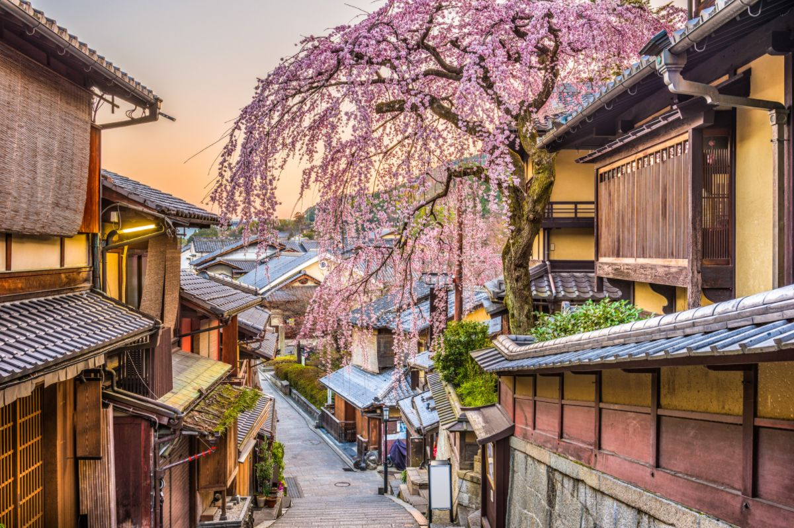

.TRAVEL.

Kyoto is a city in Japan
Kyoto City isn't just another dot on Japan's map; it's an incredible city woven with tales older than time. From its most famous temples, drawing both Japanese people and foreign tourists alike, to quiet neighborhoods where the spirit of Old Japan lingers, there's a depth to Kyoto that's unparalleled.

Island in French Polynesia
You can see the mountains wherever you are in Tahiti, with lush green valleys between them and magnificent waterfalls cascading down. The northern coast of the island is very developed, but when you visit the peninsula, Tahiti Iti, it's like stepping into another world

Phuket is a city in Thailand
Phuket, a rainforested, mountainous island in the Andaman Sea, has some of Thailand’s most popular beaches, mainly situated along the clear waters of the western shore. The island is home to many high-end seaside resorts, spas and restaurants. Phuket City, the capital, has old shophouses and busy markets. Patong, the main resort town, has many nightclubs, bars and discos